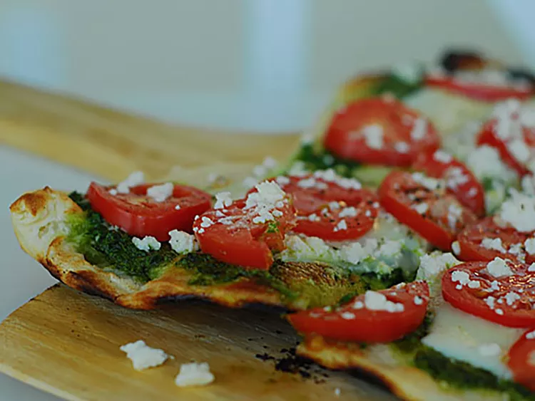

Pesto Pizza

Thin Crust Pesto Pizza
This simple but satifying pesto topped thin crust
pizza is always a winner.
The pre-baked crust means
that this delicious pizza can be whipped up in just
a few simple steps.
Ingredients
- 1 12 inch pre-baked pizza crust
- ½ cup pesto
- ½ cup green bell pepper, chopped
- 1 ripe tomato, chopped
- 1 2oz can chopped black olives, drained
- 1 ½ small red onion, chopped
- 1 4oz can artichoke hearts, drained and sliced
1 cup crumbled feta cheese
How to prepare
- Preheat the oven to 450 degrees F (230 degrees C).
- Spread pesto on pizza crust. Top with tomato, bell pepper,
olives, red onion, artichoke hearts, and feta cheese.
- Bake in the preheated oven until cheese is melted and
browned, 8 to 10 minutes.